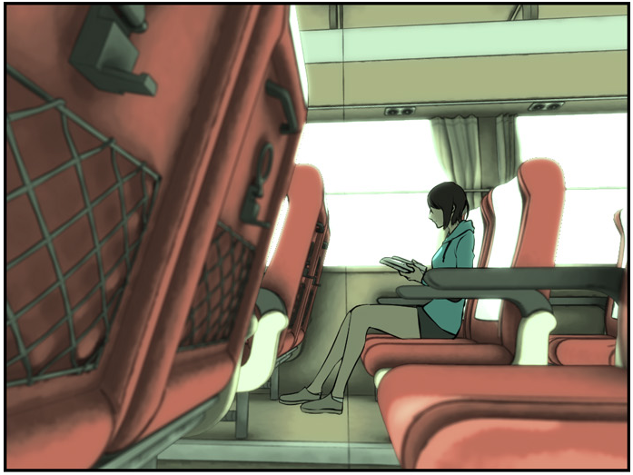
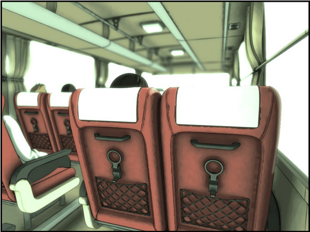
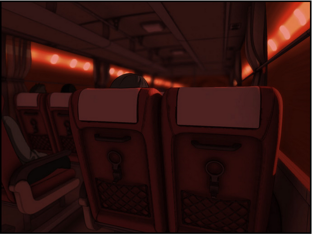
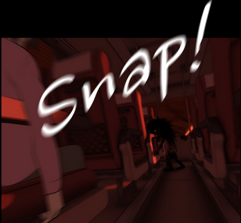
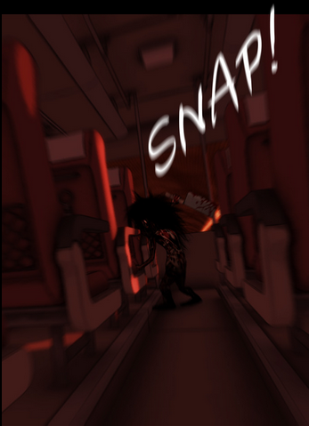

Varios años atrás, yo iba en camino hacia mi ciudad natal, sola en un bus exprés. Solo habían cerca de 8 o menos personas viajando junto conmigo en el mismo bus, en cierto punto el bus entro en un túnel y mientras el entorno se volvía cada vez más oscuro, cerré mis ojos así como cerraba el libro que estaba leyendo para matar el aburrimiento que da el largo trayecto. No paso mucho cuando entre en un profundo sueño, supongo que estaba bien cansada por el viaje. Paso un tiempo, abrí mis ojos y mire por la ventana solo para descubrir que todavía seguíamos dentro del túnel, como sentí que había pasado un tiempo, yo solo pensé que habríamos entrado a otro túnel, uno distinto que en el que caí dormida.
 
Pero no importaba cuanto anduviera el bus… no miraba la salida a ese túnel.
Parecía como si un viento de fuera de este mundo me cubriera me diera este sentimiento de incomodidad, tenía escalofríos por todo mi cuerpo. Me incline hacia el corredor para pegar una ojeada hacia dentro del bus… todos los pasajeros parecían estar dormidos, con sus cuerpos hacia un lado del asiento, pero no podía estar segura dado a los asientos que estos altos respaldares. Me voltee para ver la parte trasera del bus… para encontrar unos pasajeros en el suelo con heridas fatales por todo su cuerpo y grades manchas de sangre. Un sentimiento de que algo horrible estaba ocurriendo pasó por mi mente, cuando de repente… [SNAP] un horripilante sonido vino del frente. [CRACK] [SNAP] [SNAP] [SNAP] [CRACK]
 
Desde ese punto todo es borroso.
Con gran pánico apretaba el botón de mi cinturón de seguridad para liberarme y salir de allí, lo estaba haciendo con tanto esmero que hasta las uñas de mis dedos se quebraron, pero… extrañamente mi cinturón no se destrabo.
El cuchillo del niño se clavó en mi pierna dejándome con un dolor que me quedaba y dejándome inconsciente.